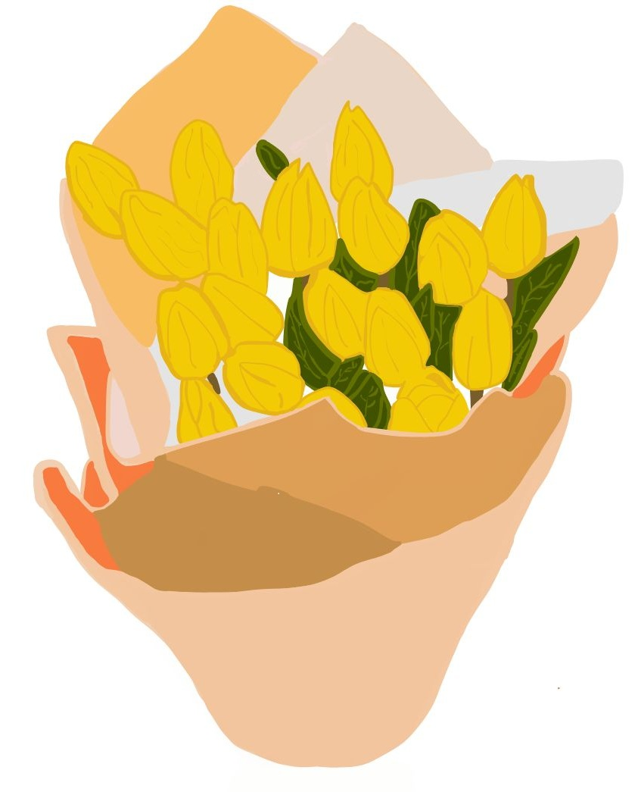
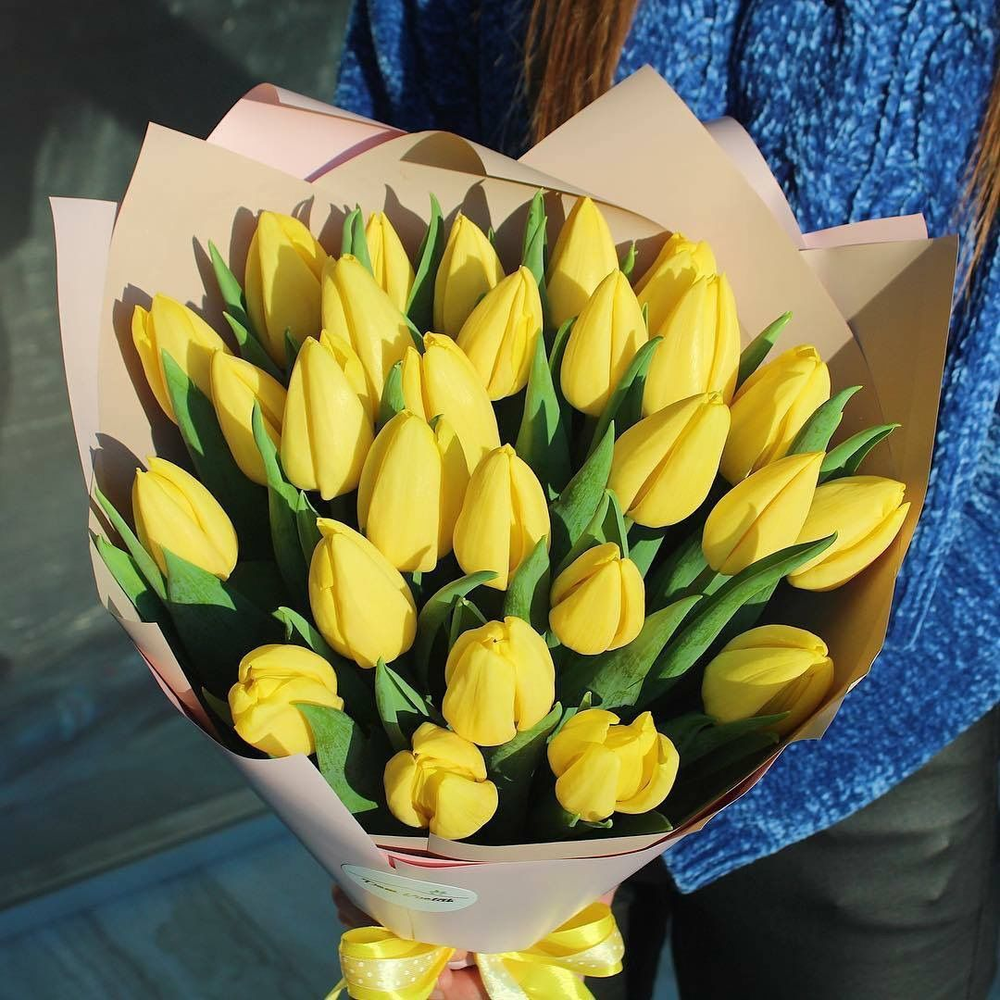

Mi pequeña Lau
Así como las flores amarillas, tú representas alegría, esperanza y la promesa de un mañana lleno de luz.
Como las flores amarillas que alegran un paisaje bajo la luna, así se alegra mis dias cada vez que pienso en ti. Eres la chispa que ilumina mis días y la buena energía que hace más especiales mis momentos.
Mi regalo son estos tulipanes hechos a mano :( Perdón, algún día tomaré clases de dibujo y pintura para hacerlos mejor.
Te voy a dejar otros tulipanes para que recuerdes cómo son después de ver esa obra de arte. :D
Espero algún día poder darte unas flores más reales, porque la de dibujar tulipanes o cualquier flor no me la sé y no quiero pasar más pena.